アイテム
採掘ツルハシ / Mining Pickaxe
ケイブニウムと何かのツルハシを素材に作成できるツルハシです。
正確にはベースのツルハシに一括破壊や範囲破壊といった採掘補助機能を付与するプラグインのようなものです。

中心のツルハシは、ツルハシであれば、何でも素材にできます。(例: 木のツルハシ, 石のツルハシ, ダイヤのツルハシ)
他MODで追加されるツルハシにもだいたい対応しています。
採掘ツルハシを置けば、修復レシピにもなります。
ケイブニウムの代わりに上質なケイブニウムを置くと、等級の付与された採掘ツルハシをクラフトできます。
性能
採掘ツルハシの破壊速度や耐久値などの主な性能は全てベースのツルハシに依存します。
ベースのツルハシの性能が良ければ採掘ツルハシの性能も良くなります。
等級
上質なケイブニウムを含めてクラフトした採掘ツルハシに付与されます。
等級は最大でⅣまであり、高ければ高いほど快適な採掘ができます。
採掘モード
採掘ツルハシはいくつかの破壊モードを備えており、採掘ツルハシを持って右クリックすることで切り替えることができます。
ノーマル / NORMAL
通常モードです。普通のツルハシのように1ブロックずつ破壊できます。
一括破壊 / QUICK
ブロックを破壊した際に、周囲に直接繋がった同ブロックが存在すれば同時に破壊します。
マウスの中クリックをすることで、一括破壊の対象となるブロックの選択GUIを開けます。
範囲破壊 / RANGED
ブロックを破壊した際に、周り1ブロックを含めた3×3の範囲を同時に破壊できます。
等級がI以上のもので使用できます。
マウスの中クリックをすることで、範囲破壊の対象となるブロックの選択GUIを開けます。
坑道掘り / ADIT
ブロックを破壊した際に、1×2の坑道となるように上もしくは下のブロックを同時に破壊します。
自分より下のブロックは同時に破壊しません。
マウスの中クリックをすることで、坑道掘りの対象となるブロックの選択GUIを開けます。
ノーマルモード以外での同時破壊では、破壊した分だけ耐久値を消費します。
また、破壊するブロックの数に応じて、破壊するまでにかかる時間が変わります。
ただし、等級が付与されているものであれば、等級に応じて補正がかかります。
伐採斧 / Lumbering Axe
ケイブニウムと何かの斧を素材に作成できる斧です。
正確にはベースの斧に木こりや一括破壊といった伐採補助機能を付与するプラグインのようなものです。

中心の斧は、斧であれば、何でも素材にできます。(例: 木の斧, 石の斧, ダイヤの斧)
他MODで追加される斧にもだいたい対応しています。
伐採斧を置けば、修復レシピにもなります。
ケイブニウムの代わりに上質なケイブニウムを置くと、等級の付与された伐採斧をクラフトできます。
性能
伐採斧の破壊速度や耐久値などの主な性能は全てベースの斧に依存します。
ベースの斧の性能が良ければ伐採斧の性能も良くなります。
等級
上質なケイブニウムを含めてクラフトした伐採斧に付与されます。
等級は最大でⅣまであり、高ければ高いほど快適な伐採ができます。
伐採モード
伐採斧はいくつかの破壊モードを備えており、伐採斧を持って右クリックすることで切り替えることができます。
ノーマル / NORMAL
通常モードです。普通の斧のように1ブロックずつ破壊できます。
伐採 / LUMBERING
いわゆる木こりに適したモードです。
ブロックを破壊した際に、それより上の直接繋がった同ブロックが存在すれば同時に破壊します。
マウスの中クリックをすることで、伐採の対象となるブロックの選択GUIを開けます。
一括破壊 / QUICK
ブロックを破壊した際に、周囲に直接繋がった同ブロックが存在すれば同時に破壊します。
マウスの中クリックをすることで、一括破壊の対象となるブロックの選択GUIを開けます。
範囲破壊 / RANGED
ブロックを破壊した際に、周り1ブロックを含めた3×3の範囲を同時に破壊できます。
等級がI以上のもので使用できます。
マウスの中クリックをすることで、範囲破壊の対象となるブロックの選択GUIを開けます。
ノーマルモード以外での同時破壊では、破壊した分だけ耐久値を消費します。
また、破壊するブロックの数に応じて、破壊するまでにかかる時間が変わります。
ただし、等級が付与されているものであれば、等級に応じて補正がかかります。
掘削シャベル / Digging Shovel
ケイブニウムと何かのシャベルを素材に作成できるシャベルです。
正確にはベースのシャベルに一括破壊や範囲破壊といった掘削補助機能を付与するプラグインのようなものです。

中心のシャベルは、シャベルであれば、何でも素材にできます。(例: 木のシャベル, 石のシャベル, ダイヤのシャベル)
他MODで追加されるシャベルにもだいたい対応しています。
掘削シャベルを置けば、修復レシピにもなります。
ケイブニウムの代わりに上質なケイブニウムを置くと、等級の付与された掘削シャベルをクラフトできます。
性能
掘削シャベルの破壊速度や耐久値などの主な性能は全てベースのシャベルに依存します。
ベースのシャベルの性能が良ければ掘削シャベルの性能も良くなります。
等級
上質なケイブニウムを含めてクラフトした掘削シャベルに付与されます。
等級は最大でⅣまであり、高ければ高いほど快適な掘削ができます。
掘削モード
掘削シャベルはいくつかの破壊モードを備えており、掘削シャベルを持って右クリックすることで切り替えることができます。
ノーマル / NORMAL
通常モードです。普通のシャベルのように1ブロックずつ破壊できます。
一括破壊 / QUICK
ブロックを破壊した際に、周囲に直接繋がった同ブロックが存在すれば同時に破壊します。
マウスの中クリックをすることで、一括破壊の対象となるブロックの選択GUIを開けます。
範囲破壊 / RANGED
ブロックを破壊した際に、周り1ブロックを含めた3×3の範囲を同時に破壊できます。
等級がI以上のもので使用できます。
マウスの中クリックをすることで、範囲破壊の対象となるブロックの選択GUIを開けます。
ノーマルモード以外での同時破壊では、破壊した分だけ耐久値を消費します。
また、破壊するブロックの数に応じて、破壊するまでにかかる時間が変わります。
ただし、等級が付与されているものであれば、等級に応じて補正がかかります。
耕作クワ / Farming Hoe
ケイブニウムと何かのクワを素材に作成できるクワです。
正確にはベースのクワに一括耕作や範囲耕作といった耕作補助機能を付与するプラグインのようなものです。
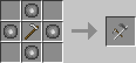
中心のクワは、クワであれば、何でも素材にできます。(例: 木のクワ, 石のクワ, ダイヤのクワ)
他MODで追加されるクワにもだいたい対応しています。
耕作クワを置けば、修復レシピにもなります。
性能
耕作クワの破壊速度や耐久値などの主な性能は全てベースのクワに依存します。
ベースのクワの性能が良ければ耕作クワの性能も良くなります。
耕作モード
耕作クワはいくつかの耕作モードを備えており、耕作クワを持って空中で右クリックすることで切り替えることができます。
ノーマル / NORMAL
通常モードです。普通のクワのように1ブロックずつ耕作できます。
一括耕作 / QUICK
ブロックを耕したり作物を収穫した際に、周囲に直接繋がった同ブロックが存在すれば同時に耕したり収穫したりします。
収穫するときは、成長していない作物は無視され、成長しきった作物だけが同時に収穫されます。
範囲耕作 / RANGED
ブロックを耕したり作物を収穫した際に、周り1ブロックを含めた3×3の範囲を同時に耕したり収穫したりできます。
ノーマルモード以外での同時耕作では、耕作した分だけ耐久値を消費します。
ケイブニックボウ / Cavenic Bow
速射や松明といったモードを備えた弓です。
ケイブニックボウでの攻撃では、攻撃後のモブの無敵時間が発生しません。
レシピは存在せず、ケイブニックボウを持ったケイブニックスケルトンからのドロップで入手できます。
また、廃坑やダンジョンのチェストに入っていることも稀にあります。
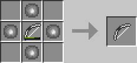
ケイブニックボウを中央に置いて、隣接する4つのスロットを上質なケイブニウムで埋めてクラフトすることで修復ができます。
その際、元のケイブニックボウに付与されていたエンチャントは引き継がれます。
射的モード
ケイブニックボウを持ってスニークしながら腕を振る(左クリックする)ことで切り替えることができます。
ノーマル / NORMAL
通常モードです。普通の弓のように振る舞うことができます。
速射 / RAPID
かなり速いスピードで矢を連射できるモードです。マウスを右クリックしている間、矢が尽きるまで連射し続けます。
ただし、ノーマルモードに比べて一発の攻撃力は若干劣ります。
狙撃 / SNIPE
狙った場所に、正確に大きなダメージを与えることができるモードです。
ズーム倍率が高く、フルチャージしたときはダメージ倍率も高くなります。
ズームが最大倍率になってるときにしゃがむと、ターゲットに枠が表示され、より狙いやすくなります。
また、このモードでのズームは、暗闇の中でも少し見やすくなる補正がかかります。
松明 / TORCH
矢と一緒に松明も消費して放つことで、当たった場所に松明を設置できるモードです。
設置できなければ、その場に松明のみアイテム化してドロップします。
モブに当てた場合は、そのモブを炎上させることができます。
鉱石コンパス / Ore Compass
コンパスを改造し、近くの鉱石の方角を示すようにしたコンパスです。
鉱石コンパスから64ブロック以内の±3の高度にある鉱石の方角を示します。
クリエイティブモードであれば、鉱石コンパスのツールチップに最寄りの鉱石の名前と距離も表示されます。
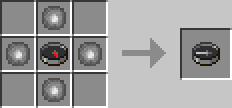
コンパス1個と上質なケイブニウム4個でクラフトできます。
アクアマリン / Aquamarine
アクアマリン鉱石を採掘するとドロップするアイテムです。
関連項目: ブロック - アクアマリン鉱石
アクアマリンを素材に作成できるツールは、水中であっても採掘速度が遅くならない特性を持ちます。
性能は鉄製よりも少し耐久値は劣り、破壊速度は勝ります。
アクアマリンのツルハシ / Aquamarine Pickaxe
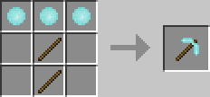
アクアマリンの斧 / Aquamarine Axe
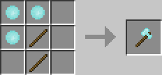
アクアマリンのシャベル / Aquamarine Shovel
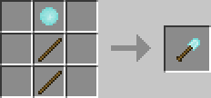
マグナイトインゴット / Magnite Ingot
マグナイト鉱石を精錬することで得られるアイテムです。
関連項目: ブロック - マグナイト鉱石
マグナイトインゴットを素材に作成できる剣やツールは、非常に高い性能を持ちますが非常に壊れやすいのが特徴です。
マグナイトの剣 / Magnite Sword
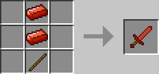
マグナイトの剣での攻撃は無敵時間が発生しません。
マグナイトのツルハシ / Magnite Pickaxe
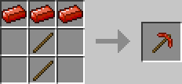
マグナイトの斧 / Magnite Axe
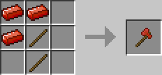
マグナイトのシャベル / Magnite Shovel
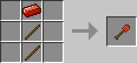
ヘキサイト / Hexcite
ヘキサイト鉱石を採掘するとドロップするアイテムです。
関連項目: ブロック - ヘキサイト鉱石
ヘキサイトを素材に作成できる剣やツールは、ダイヤ製よりも耐久値は少し劣り、それ以外の性能は勝ります。
ヘキサイトの剣 / Hexcite Sword
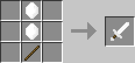
ヘキサイトのツルハシ / Hexcite Pickaxe
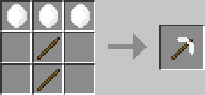
ヘキサイトの斧 / Hexcite Axe
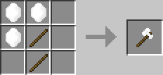
ヘキサイトのシャベル / Hexcite Shovel
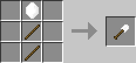
ヘキサイトのクワ / Hexcite Hoe
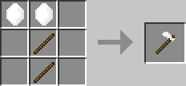
ヘキサイトのヘルメット / Hexcite Helmet
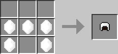
ヘキサイトのチェストプレート / Hexcite Chestplate
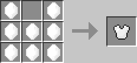
ヘキサイトのレギンス / Hexcite Leggings
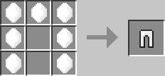
ヘキサイトのブーツ / Hexcite Boots
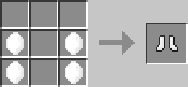
インフィタイト / Infitite
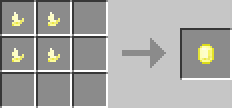
インフィタイトの欠片を4個合わせて作成できるアイテムです。
インフィタイトの欠片は、インフィタイト鉱石を採掘するとドロップします。
関連項目: ブロック - インフィタイト鉱石
インフィタイトを素材に作成できる剣やツールは、鉄製と同等の性能を持ち、耐久値が全く減らない特性を持ちます。
インフィタイトの剣 / Infitite Sword
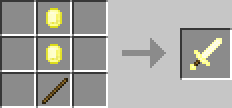
インフィタイトのツルハシ / Infitite Pickaxe
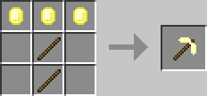
インフィタイトの斧 / Infitite Axe
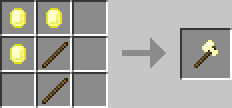
インフィタイトのシャベル / Infitite Shovel
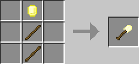
インフィタイトのクワ / Infitite Hoe
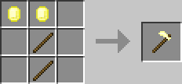
インフィタイトのヘルメット / Infitite Helmet
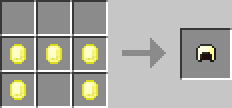
インフィタイトのチェストプレート / Infitite Chestplate
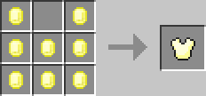
インフィタイトのレギンス / Infitite Leggings
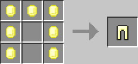
インフィタイトのブーツ / Infitite Boots
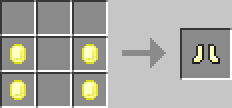
ケイバーのリュック / Caver's Backpack
ケイバー(洞窟探検家)のためのリュックです。
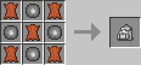
ケイブニウム4個と皮5個でクラフトできます。
リュックを手に持って右クリックすると、リュックのインベントリを開けます。
インベントリに持っておくと、何かのブロックを設置しきったときや、アイテムを使いきったときに、リュックの中に同アイテムがあれば、自動で補填してくれます。
インベントリの搬出入
ケイバーのリュックは、インベントリに含まれるアイテムをチェストに搬入したり、チェストからアイテムを搬出したりできます。
ケイバーのリュックを手に持って対象ブロックをスニークしながら左クリックすると、リュックのインベントリにあるアイテムをブロックの持つインベントリへ一括搬入します。
右クリックすると、ブロックの持つインベントリにあるアイテムをリュックのインベントリへ一括搬出します。
アクレシアの種 / Acresia Seeds
アクレシアの栽培に用いるアイテムです。アクレシアを破壊するとドロップします。
固体ブロックの上に右クリックで植え付けることができ、しばらくすると成長します。
関連項目: ブロック - アクレシア
アクレシアの実 / Acresia Fruits
成熟したアクレシアから収穫で得られるアイテムです。
右クリックで食べることができ、食べると満腹度がほんの少し回復します。
その他
他にも以下のアイテムが追加されます。
- ケイブニウム / Cavenium
- ケイブニウム鉱石を採掘すると得られるアイテムです。
- 上質なケイブニウム / Refined Cavenium
- 上質なケイブニウム鉱石を採掘すると得られるアイテムです。ケイブニウムと比べて淡い色をしています。
- マグナイトの粉末 / Magnite Dust
- 他MODの粉砕機や石臼で粉砕することで得られるアイテムです。精錬するとマグナイトインゴットになります。
- スポーンエッグ / Spawn Egg
- Caveworld 2で追加されるモブ専用のスポーンエッグです。